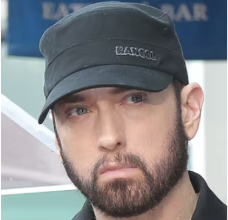
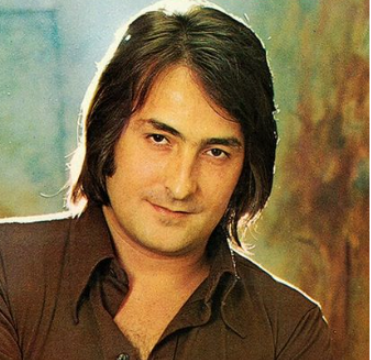

Ed Sheeran es un cantante, compositor y músico británico conocido por éxitos como "Shape of You" y "Perfect". Con su distintiva voz y letras emotivas, ha ganado numerosos premios y ha conquistado fans en todo el mundo.

Taylor Swift es una cantante y compositora estadounidense, famosa por éxitos como "Shake It Off" y "Love Story". Con múltiples premios y récords, es conocida por su capacidad para reinventarse y conectar emocionalmente con su audiencia a través de sus letras.

The Weeknd es un cantante, compositor y productor canadiense, conocido por éxitos como "Blinding Lights" y "Can't Feel My Face". Su estilo único y su voz distintiva han ganado numerosos premios y millones de seguidores en todo el mundo.

Eminem es un rapero, compositor y productor estadounidense, reconocido por su habilidad lírica y éxitos como "Lose Yourself" y "Without Me". Considerado uno de los mejores raperos de todos los tiempos, ha ganado múltiples premios y ha dejado una marca indeleble en la música hip-hop.
